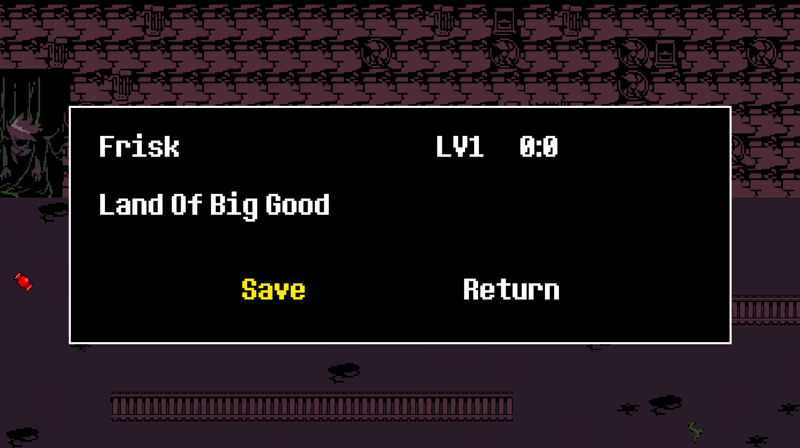
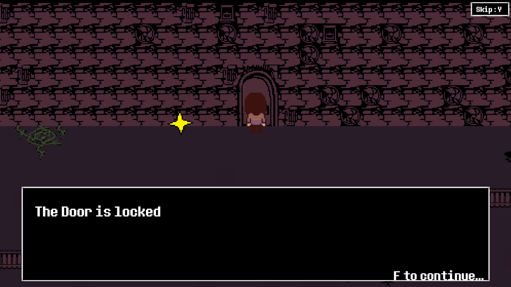
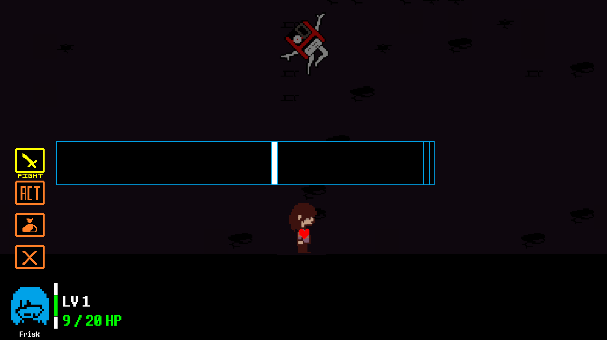
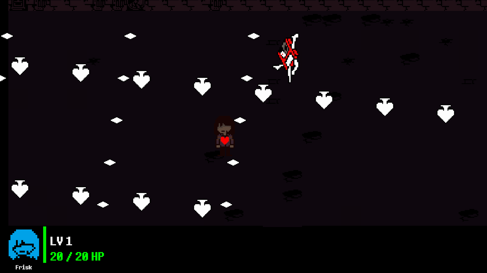
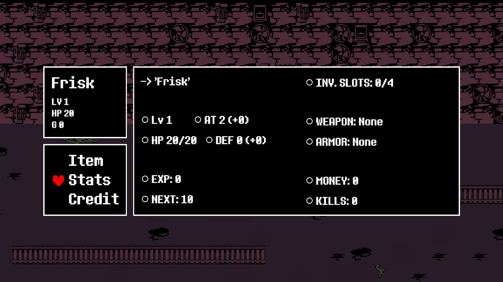
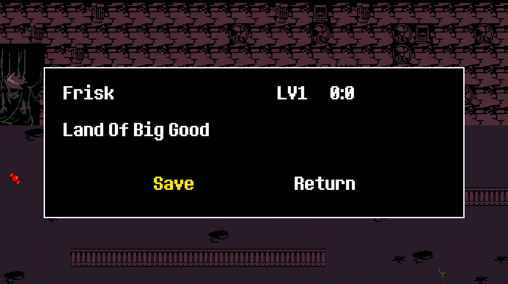
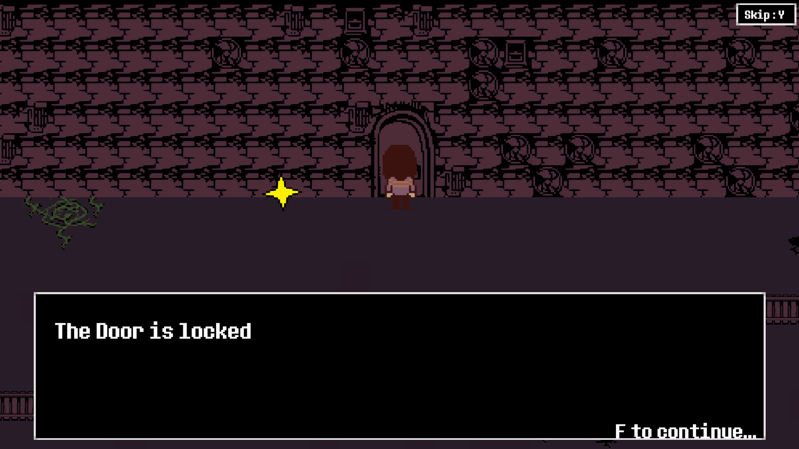
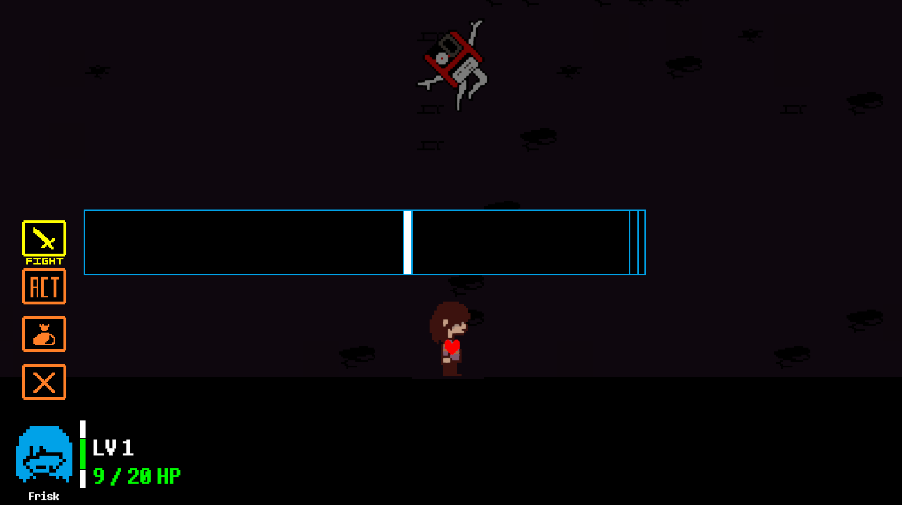
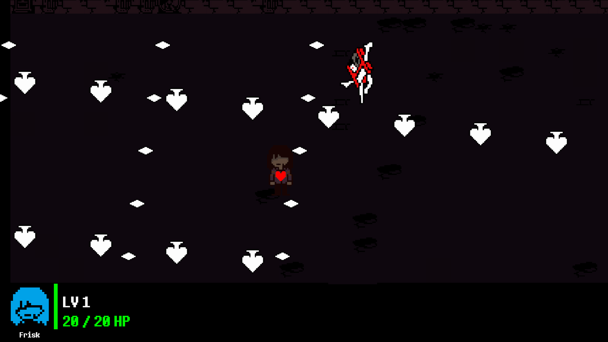
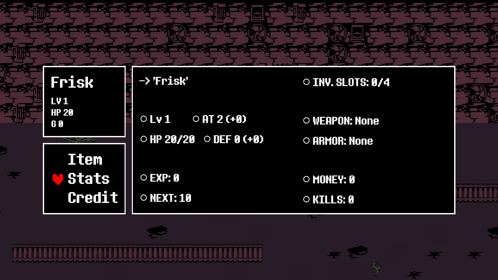

Fabien Villedieu
Développeur Novice • Créatif
Développeur Novice • Créatif
Ce projet consiste en la création d'un jeu vidéo pour apprendre et mettre en application mes fraiches competences en codage C# et C++.
D'abord à l'aide des tuto intégré de Unity mais aussi avec les tutoriels sur Youtube, j'ai appris en autodidacte comment Unity fonctionne, et comment confectionner les differentes mecaniques que je voulais implémenter
Je pense que c'est l'un de mes projets où je me suis le plus épanouis car j'ai eu une liberté total sur tout le projet. Mais c'est aussi à cause de cette liberté que j'ai fait certaines erreures qui m'ont grandement pénalisé
 









La mise en place des mecaniques de passage d'une zone à l'autre ainsi que les colisions ont été difficile à mettre en place.
La prise en main du logiciel a été un peu laborieux mais finalement j'ai réussi à m'en sortir.
Beaucoup de perte de temps sur des fonctionnalités qui ne sont pas indispensable. Je n'avais pas encore compris la necessité de faire un diagramme UML et de mettre en place un plan pour organiser mes seances de developement au lieu de tout faire au jour le jour.
C#
Unity
UML
8 semaines
Projet académique en milieu de première année de BTS
Effectué seul